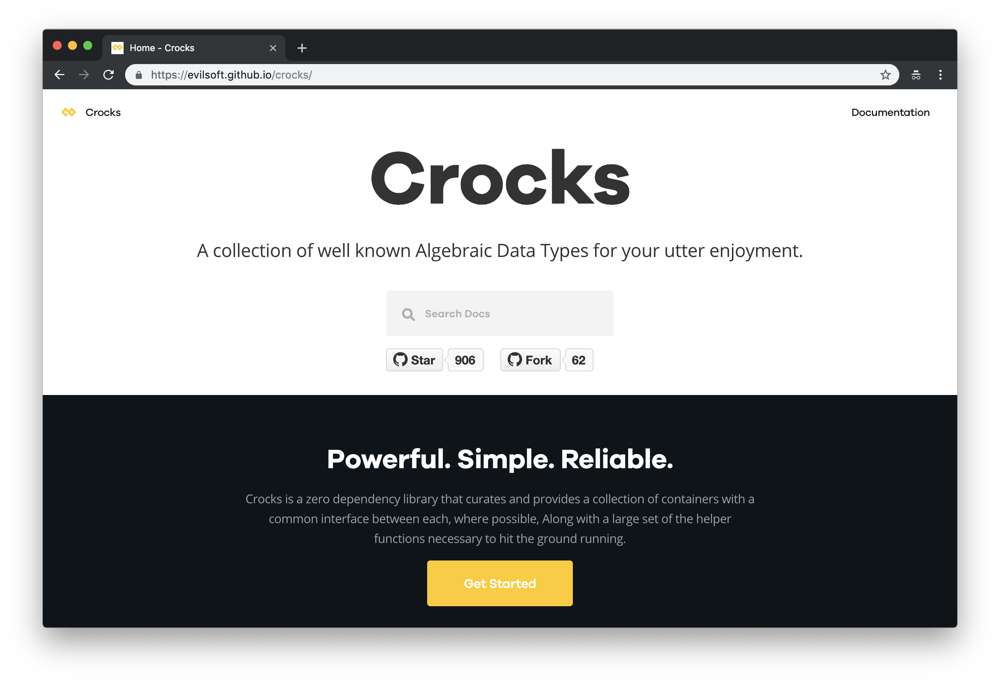

Starting Functional JavaScript
(Space or Arrow Keys to Navigate)
Pure Functions
Functions that have no side effects are said to be pure.
Pure functions are useless, easily tested, and referentially transparent.
Currying
and
Partial Application
Curried Functions
Take their arguments one at a time.
Partial Application
Use closure to defer computation.
Partial application has many uses e.g. generic functions or fluent computations.
Function Composition
Reduces many functions to one by applying each outer function to the application of the inner function.
In other words, makes one function from two (or more) others.
Use Case: Class Mixins
JavaScript class mixins are a way to share behaviour among classes
Pointfree Style
Functions which reference their own data are said to be "pointed". Likewise, functions which do not reference their parameters are said to be "pointfree". With curried and point-free functions, always take your data as the last parameter.
Functors
A functor is a container for some value, like an envelope.
Functors can map from some value x in a category to another value y in that same category.
Array and Promise are both functors.
Crocks
Crocks Helpers
Crocks Logic
Crocks Curry
Crocks' curry is very flexible.
Monoids
A monoid is a type which has an 'empty' value, and an operation to combine values. Combining a value with the 'empty' value always produces the same value.
- What is the empty value for numbers under addition?
- Under multiplication?
You're already using monoids!
&&forms a monoid withtrueas empty value||forms a monoid withfalseas empty valueString#concatforms a monoid with''as empty value.Object.assignforms a monoid with{}as empty valueArray#concatforms a monoid with[]as empty value
mreduceMap
Folds an array under a monoid of your choice, first mapping your monoid constructor over it.
Monad
Like a functor, Monads can map over their contents.
Monads have the added ability to unwrap their self-similar contents.
This power is called chain, bind, or flatMap
Maybe Monad
The Maybe monad wraps a value which may not exist.
It has two instances: Just a and Nothing.
Mapping over a Just works as expected.
Mapping over a Nothing skips execution.
Maybe Monad - Binary
Maybe Monad - Binary
Wait!! People code like that?
👉 NOPE 👈
Monads are also applicatives, which means we can lift any function into 'monadic space' with lift
Thanks For
Watching!